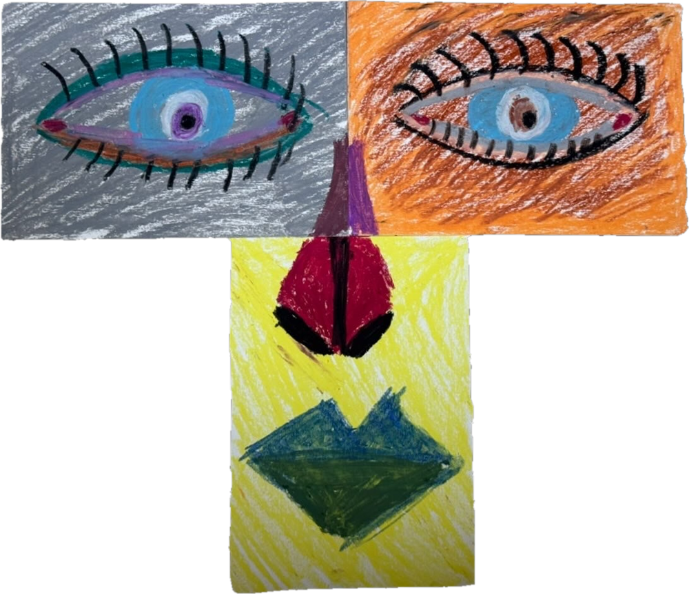

윤슬과 파도
옆으로 걸으며 감상하세요.


문찬웅 그림전

옆으로 걸으며 감상하세요.
윤슬은 분명 보이지만, 바다에 햇빛이나 달빛이 비쳐 보이는 모습일 뿐, 윤슬이라는 것은 따로 없습니다. 그렇다고 윤슬이 없는 것도 아닙니다. 핵심은 이 둘이 둘이 아니라는 것입니다.
형태가 보이는 것도 고정된 실체는 없습니다. 실체가 없기에 인연에 따라 여러 모습으로 나타납니다. 바다와 바람이 인연이 되어 파도를 만들 수 있듯이, 사람도 누구와 함께하느냐에 따라 여러 모습을 보일 수 있습니다. 그 모습이 마음에 들든 안 들든, 내 모습일 수도 있고 아닐 수도 있다는 것입니다.
이젤 위에서 마르고 있는 그림